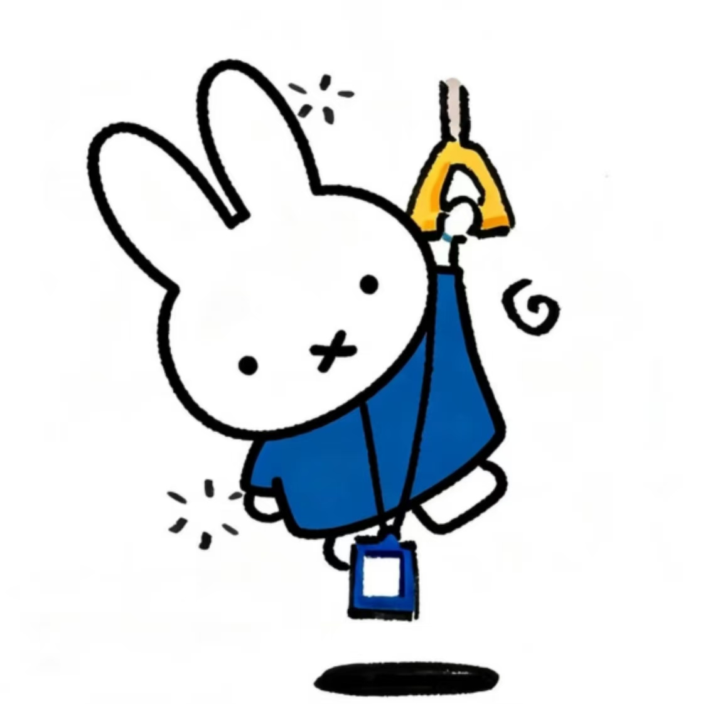

一些会走向你的小念头
写给你，和那些忽然想起你的时刻。
记录者：成唯文
调查对象：谭伶俐
第二幕 · 突然想起你
有时候，我也说不清是从什么时候开始想你的。
可能只是看到一片云，听见一句话，或者走到一个再普通不过的地方。
明明是很小的一件事，却忽然想把它讲给你听。

后来才发现，我想分享的好像不只是那件事。
是你。
想让你也在我的日常里。
哪怕只是听我说一句没头没尾的话，或者陪我把一个很普通的瞬间过得久一点。
第三幕 · 那些没有来由的瞬间
有几个念头，想给你看看。
都是一些很小的事。
小到不一定值得讲，却总是想让你知道。
一个很小的瞬间
看见一点好看的东西，会下意识想留给你。
等反应过来，才发现我已经在心里替你看过一遍了。
有时候想分享的也不是风景，只是想让你知道，我看见了它，也想起了你。
一条没发出去的消息
有时候想了很多话，删删改改，最后只剩一句：
你在干嘛。
不是没话说。
只是想你的时候，反而不知道该从哪一句开始。
好像说得太轻，怕你没听见；说得太认真，又有一点不好意思。
关于拥抱的设想
我偶尔会想，下次见面，第一句话应该说什么。
后来觉得，不必想得太周全。
见到你的时候，先抱一抱。
剩下的话，总会慢慢找到出口。
如果你现在在
大概会先看看你。
然后装作若无其事地说点别的，像是那些在心里排练过很多遍的话，突然都不着急了。
只是会想再靠近你一点。
再一点。
好像这样，就能把没见面的那些日子，慢慢补回来。
第四幕 · 如果现在可以见到你
如果现在就能见到你。
不想那么多了。
先想想，我们会做些什么。
你想先做什么？
第五幕 · 最后一点想说的话
我发现，想念好像并不总是一件很郑重的事。
它常常发生在一些没有准备的瞬间。
看到一件有趣的东西，会想发给你。
听见一句话，会想知道你听到之后会怎么回答。
有时候明明没有什么特别的事，却还是想和你说说话。
好像一天里总有一些小小的空隙，会自然地留给你。
我也不是每一次都知道该怎么表达。
有些话想了很久，说出来却只剩下短短几句。
有些念头明明很清楚，真的要讲给你听时，又觉得好像不用说得那么明白。
因为你大概已经慢慢变成了我生活里很自然的一部分。
不是每时每刻都要想起。
只是想起的时候，会觉得，嗯，是你啊。
然后心里就安静了一点。
所以，这些零零碎碎的话，就先放在这里。
等你看到的时候，如果刚好也想起我，那就更好了。
至于下一次见面。
我想先抱抱你。
不必急着说什么。
见到你，就已经很好了。
下次见面，先抱一下吧。
这份想念，收好了。